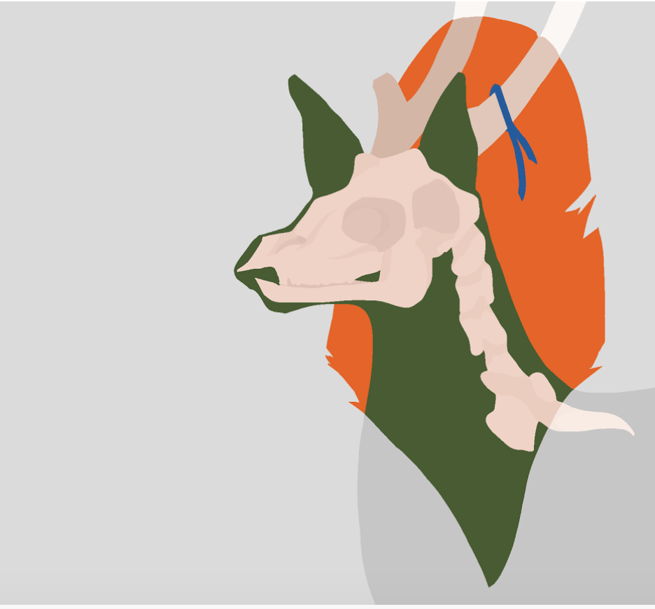

Untitled by Rose Guan ('19)

ABC's of TBD by Emily Chen ('18)
you are the brain & i am the heart
so i alphabetized your synonyms & my secrets,
folded myself into warm quarters in your suit pocket,
bit my tongue & trembled at the sight of your name,
to understand our solvency train through the augur of your lens,
to make & break the silence of yesterday & tomorrow:
hold that thought, let me speak, i ache to –
again, i say instead, again & again & again, one last time,
speak to me, hold me close, look me in the eye, leave me waiting;
you will leave & i will recede, tide to moon to snow too soon, but
my red eyes & buried letters only run away from your time,
i write & write & write because we are running out of time.
A is for agape: every confidence i thieve
from your core, clutching them like unripe persimmons,
or microcephalic infants swathed in blue, every
stripped explanation of a matter of the heart, the infinity
of your contradictions & my untruths, holy in generous theory:
why you forgive & forget all too soon.
B is for beloved: tell me what to do
when “forever” means “biennial” & “end” means “gone”
& you do not understand; a placeholder cannot
take me apart & reconstruct me from razor shards, lightning rejects;
i chose you & will choose you – i give & i take & you do not need to
pretend you do not see: please, stay, forget me, stay.
C is for constant: i told you, i have learned
to look for you in every room, to listen for your voice
in every crowd; but you, you will never remember the words
i hide behind sharp teeth, i have dissected my veins & found
your sound, each time you saved me from splinters & eclipses,
saved me from conceptualizing myself & my heat.
D is for doubt: expectations are your bane, my death,
i promised i hold you to nothing but nothing means nothing
until i quell the louder voice slipping up the cracks of my spine
threatening maybe & hope & someone will stay;
tell me, how do i solve for you, for the time i have,
when absence is the king of sorrow?
dictionaries of inked notes, of pleads & tears & blood
stiched into my pillow: one night, two nights, a year without
you, my life without you – a drama, a library could not hold
the platitudes of yearning, the press of my phone to my cheek,
hyperventilation & resting tremors, the strings of apropper puppet heart that it danced its last when you bid goodbye to us.